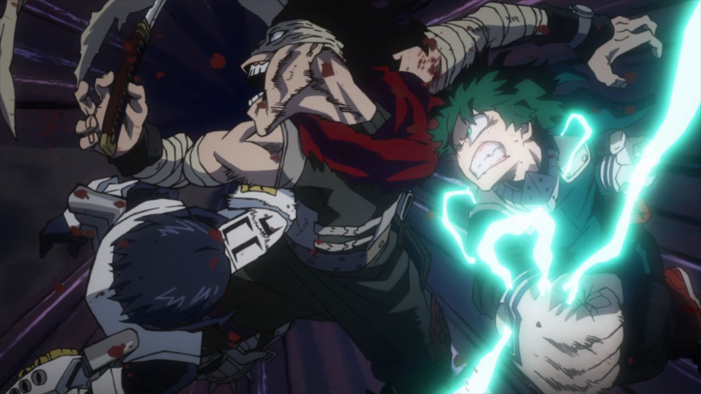

LOS ANUNCIOS SON NECESARIOS PARA MANTENER LA WEB ONLINE
SI DESEAS APOYAR DAR CLICK EN TODOS LOS ANUNCIOS, NO LOS EVITEN ______________________________________Nombre: My Hero Academia Temporada 2
Precuela: My Hero Academia Temporada 1
Tipo: Serie
Año: 2017
Género: Acción, Fantasía, Escolar
Resolución: 1920×1080
Duración por Episodio: 30 minutos
Audios: Español Latino
Peso por Episodio: 100MB - 200MB
Calidad: 1080P
Servidor: Mediafire
El 80% de la población mundial ha desarrollado superpoderes y son entrenados en la Academia de Héroes. Como consecuencia, han surgido tanto superhéroes como supervillanos. Izuku Midoriya es parte de ese 20% sin ningún poder sobrenatural. Sin embargo, su mayor deseo es poder estudiar en la Academia y convertirse en un héroe
Capturas del anime

Descargar Episodios

- Temporada 2 en Español Latino